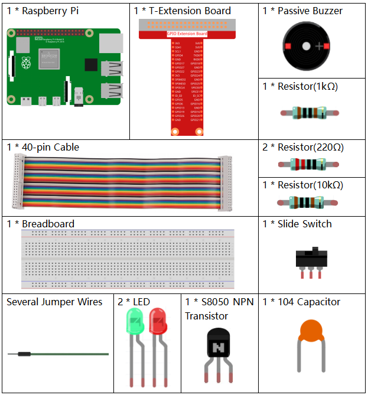

Note
Bonjour, bienvenue dans la communauté SunFounder dédiée aux passionnés de Raspberry Pi, Arduino et ESP32 sur Facebook ! Plongez au cœur de ces technologies avec d’autres amateurs partageant la même passion.
Pourquoi nous rejoindre ?
Support d’Experts : Résolvez vos problèmes après-vente et relevez vos défis techniques avec l’aide de notre communauté et de notre équipe.
Apprendre & Partager : Échangez astuces et tutoriels pour perfectionner vos compétences.
Avant-premières exclusives : Accédez en avant-première aux annonces de nouveaux produits et à des aperçus exclusifs.
Réductions spéciales : Profitez de remises exclusives sur nos produits les plus récents.
Promotions festives et concours : Participez à nos promotions spéciales et tirages au sort pendant les périodes festives.
👉 Prêt à explorer et à créer avec nous ? Cliquez sur [Ici] et rejoignez-nous dès aujourd’hui !
3.1.10 Alarme Manuelle
Introduction
Dans ce projet, nous allons créer un dispositif d’alarme manuel. Vous pouvez remplacer l’interrupteur à bascule par une thermistance ou un capteur photosensible pour réaliser une alarme de température ou de lumière.
Composants nécessaires
Dans ce projet, nous avons besoin des composants suivants.
{kind=link}
Schéma du Circuit
T-Board Name |
physical |
wiringPi |
BCM |
GPIO17 |
Pin 11 |
0 |
17 |
GPIO18 |
Pin 12 |
1 |
18 |
GPIO27 |
Pin 13 |
2 |
27 |
GPIO22 |
Pin 15 |
3 |
22 |

Procédure expérimentale
Étape 1 : Construisez le circuit.

Étape 2 : Changez de répertoire.
cd ~/davinci-kit-for-raspberry-pi/python-pi5
Étape 3 : Exécutez le script.
sudo python3 3.1.10_AlarmBell.py
Une fois le programme démarré, l’interrupteur basculera à droite et le buzzer émettra des sons d’alarme. En même temps, les LED rouge et verte clignoteront à une certaine fréquence.
Avertissement
Si le message d’erreur RuntimeError: Cannot determine SOC peripheral base address s’affiche, veuillez vous référer à Si gpiozero ne fonctionne pas.
Code
Note
Vous pouvez Modifier/Réinitialiser/Copier/Exécuter/Arrêter le code ci-dessous. Mais avant cela, vous devez accéder au chemin source du code, tel que davinci-kit-for-raspberry-pi/python-pi5.
#!/usr/bin/env python3
from gpiozero import LED, Button, TonalBuzzer
import time
import threading
# Initialisation du TonalBuzzer sur la broche GPIO 22
BeepPin = TonalBuzzer(22)
# Initialisation des LEDs sur les broches GPIO 17 et 27
ALedPin = LED(17)
BLedPin = LED(27)
# Initialisation du bouton sur la broche GPIO 18
switchPin = Button(18)
# Variable globale pour contrôler l'état du buzzer et des LEDs
flag = 0
def ledWork():
"""
Control LED blinking pattern based on the flag state.
When flag is set, alternately blink ALedPin and BLedPin.
"""
while True:
if flag:
# Clignotement alternatif des LEDs
ALedPin.on()
time.sleep(0.5)
ALedPin.off()
BLedPin.on()
time.sleep(0.5)
BLedPin.off()
else:
# Éteindre les deux LEDs si flag est désactivé
ALedPin.off()
BLedPin.off()
# Définir la mélodie musicale comme une liste de notes et de leurs durées
tune = [
('C4', 0.1), ('E4', 0.1), ('G4', 0.1),
(None, 0.1),
('E4', 0.1), ('G4', 0.1), ('C5', 0.1),
(None, 0.1),
('C5', 0.1), ('G4', 0.1), ('E4', 0.1),
(None, 0.1),
('G4', 0.1), ('E4', 0.1), ('C4', 0.1),
(None, 0.1)
]
def buzzerWork():
"""
Play a tune using the buzzer based on the flag state.
The tune is played only when the flag is set.
"""
while True:
for note, duration in tune:
if flag == 0:
break
print(note) # Afficher la note actuelle dans la console
BeepPin.play(note) # Jouer la note actuelle
time.sleep(duration) # Pause pendant la durée de la note
BeepPin.stop() # Arrêter le buzzer après la mélodie
def main():
"""
Monitor button press to update the flag state.
Sets the flag when the button is pressed.
"""
global flag
while True:
flag = 1 if switchPin.is_pressed else 0
try:
# Initialisation et démarrage des threads pour le contrôle du buzzer et des LEDs
tBuzz = threading.Thread(target=buzzerWork)
tBuzz.start()
tLed = threading.Thread(target=ledWork)
tLed.start()
main()
except KeyboardInterrupt:
# Arrêter le buzzer et éteindre les LEDs en cas d'interruption du programme
BeepPin.stop()
ALedPin.off()
BLedPin.off()
Explication du Code
Ce segment comprend l’importation des bibliothèques essentielles pour implémenter des délais et la gestion des threads. Il importe également les classes LED, Button et TonalBuzzer de la bibliothèque gpiozero, nécessaires pour contrôler les périphériques GPIO sur un Raspberry Pi.
#!/usr/bin/env python3 from gpiozero import LED, Button, TonalBuzzer import time import threading
Configure un buzzer sur la broche GPIO 22, deux LEDs sur les broches GPIO 17 et 27, et initialise un bouton sur la broche GPIO 18. Un drapeau global est également défini pour gérer l’état du buzzer et des LEDs.
# Initialisation du TonalBuzzer sur la broche GPIO 22 BeepPin = TonalBuzzer(22) # Initialisation des LEDs sur les broches GPIO 17 et 27 ALedPin = LED(17) BLedPin = LED(27) # Initialisation du bouton sur la broche GPIO 18 switchPin = Button(18) # Drapeau global pour contrôler l'état du buzzer et des LEDs flag = 0
Cette fonction contrôle le clignotement des LEDs en fonction de l’état du drapeau (flag). Si le drapeau est activé (1), les LEDs s’allument et s’éteignent alternativement. Si le drapeau est désactivé (0), les deux LEDs restent éteintes.
def ledWork(): """ Control LED blinking pattern based on the flag state. When flag is set, alternately blink ALedPin and BLedPin. """ while True: if flag: # Clignotement alternatif des LEDs ALedPin.on() time.sleep(0.5) ALedPin.off() BLedPin.on() time.sleep(0.5) BLedPin.off() else: # Éteindre les deux LEDs si le drapeau est désactivé ALedPin.off() BLedPin.off()
La mélodie est définie comme une séquence de notes (fréquence) et de durées (secondes).
# Définir la mélodie musicale comme une liste de notes et de leurs durées tune = [ ('C4', 0.1), ('E4', 0.1), ('G4', 0.1), (None, 0.1), ('E4', 0.1), ('G4', 0.1), ('C5', 0.1), (None, 0.1), ('C5', 0.1), ('G4', 0.1), ('E4', 0.1), (None, 0.1), ('G4', 0.1), ('E4', 0.1), ('C4', 0.1), (None, 0.1) ]
Joue une mélodie prédéfinie lorsque le drapeau est activé. La mélodie s’arrête si le drapeau est désactivé en cours de lecture.
def buzzerWork(): """ Play a tune using the buzzer based on the flag state. The tune is played only when the flag is set. """ while True: for note, duration in tune: if flag == 0: break print(note) # Affiche la note actuelle dans la console BeepPin.play(note) # Joue la note actuelle time.sleep(duration) # Pause pendant la durée de la note BeepPin.stop() # Arrête le buzzer après la mélodie
Vérifie en continu l’état du bouton pour activer ou désactiver le drapeau.
def main(): """ Monitor button press to update the flag state. Sets the flag when the button is pressed. """ global flag while True: flag = 1 if switchPin.is_pressed else 0
Les threads pour les fonctions buzzerWork et ledWork sont démarrés, leur permettant de s’exécuter simultanément avec la fonction principale.
try: # Initialiser et démarrer les threads pour le contrôle du buzzer et des LEDs tBuzz = threading.Thread(target=buzzerWork) tBuzz.start() tLed = threading.Thread(target=ledWork) tLed.start() main()
Arrête le buzzer et éteint les LEDs en cas d’interruption du programme, garantissant une sortie propre.
except KeyboardInterrupt: # Arrêter le buzzer et éteindre les LEDs en cas d'interruption du programme BeepPin.stop() ALedPin.off() BLedPin.off()